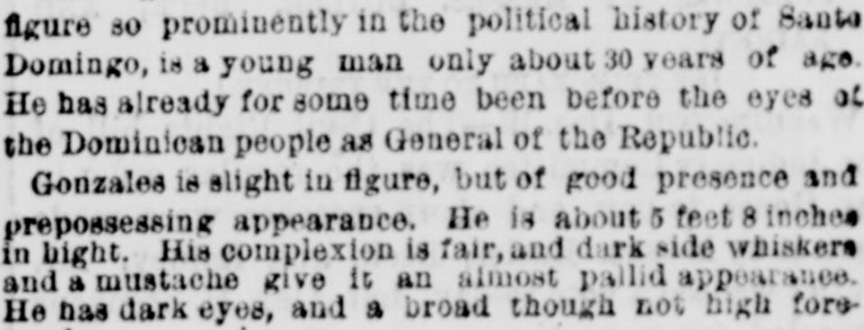

Article in transcriptionArtículo en transcripción
New-York Tribune. New York [N.Y.], December 20, 1873. Page 2. Published by New York Tribune. A daily newspaper, 1866–1924.New-York Tribune. New York [N.Y.], 20 de diciembre de 1873. Página 2. Publicado por New York Tribune. Periódico diario, 1866–1924. View the originalVer el original

An officer of the Samana Bay Company stated that a revolution in Santo Domingo would not injuriously affect the company's possessions at Samana Bay. C.S. Pussalaigue, the accredited agent of the revolutionary party, assured company officers that the revolutionaries harbor no hostility and wish to aid in the country's development. Additionally, the company owns the Samana peninsula in fee simple and seeks to acquire possession of La Vega Real.Un directivo de la Samana Bay Company declaró que una revolución en Santo Domingo no afectaría perjudicialmente las posesiones de la compañía en la bahía de Samaná. C. S. Pussalaigue, agente acreditado del partido revolucionario, aseguró a los directivos de la empresa que los revolucionarios no albergan hostilidad alguna y desean colaborar en el desarrollo del país. Además, la compañía posee la península de Samaná en dominio pleno y procura adquirir la posesión de La Vega Real.
FULL TEXT:TEXTO COMPLETO:
New-York Tribune December 20, 187320 de diciembre de 1873
Original in English.Original en inglés.
THE REVOLT AGAINST BAEZ.LA REVUELTA CONTRA BÁEZ.
HIS OVERTHROW ASSURED.SU DERROCAMIENTO ASEGURADO.
CAUSES OF THE REVOLUTION—ELEMENTS OF THE OPPOSITION—MARCH OF THE REVOLUTIONARY ARMY—GONZALES—TRADE CRIPPLED THROUGH FORCED LOANS—THE SAMANA BAY COLONISTS NOT ALARMED.CAUSAS DE LA REVOLUCIÓN—ELEMENTOS DE LA OPOSICIÓN—MARCHA DEL EJÉRCITO REVOLUCIONARIO—GONZÁLEZ—EL COMERCIO PARALIZADO POR EMPRÉSTITOS FORZOSOS—LOS COLONOS DE LA BAHÍA DE SAMANÁ NO ESTÁN ALARMADOS.
The intelligence of a revolution in Santo Domingo and a copy of the proclamation disowning the authority of President Baez and his government which had been circulated among and signed by many of the people of the island, with the proclamation of General Gonzales, were published exclusively in yesterday's TRIBUNE. During the day a reporter of THE TRIBUNE called upon a gentleman in this city who has recently left the island and who has for some months been carefully observing the gradually increasing hostility to Baez. His story was substantially as follows:Las noticias de una revolución en Santo Domingo y una copia de la proclama que desconoce la autoridad del Presidente Báez y de su gobierno, la cual había sido circulada entre muchos de los habitantes de la isla y firmada por ellos, junto con la proclama del General González, fueron publicadas exclusivamente en el TRIBUNE de ayer. Durante el día, un reportero de THE TRIBUNE visitó a un caballero en esta ciudad que ha abandonado recientemente la isla y que durante algunos meses ha estado observando atentamente la hostilidad gradualmente creciente contra Báez. Su relato fue sustancialmente el siguiente:
The Island of Santo Domingo is divided into three principal sections—the Northern, the Southern, and the Eastern District. Of these the Northern District makes no concealment of its revolutionary character, and few, if any, of its inhabitants are in sympathy with the Baez Government. The Southern District surrounding the Baez headquarters is, of course, not yet openly hostile to the President, or was not when the speaker left the island, though the apparent support given him was rather a matter of policy than of inclination. There, however, the hostility has been daily growing more apparent for some time, and many influential men have fearlessly withdrawn their allegiance. The Eastern District was at the last accounts in a somewhat similar attitude, though it was generally thought that the day was not distant which would witness a general revolt. The proclamation of non-allegiance was issued on Nov. 25, at Puerto Plata, and, five days later, the general order of Gen. Gonzales appeared, appointing a Secretary of State and Foreign Relations, Secretaries of Justice, of the Bureau of Commerce and of the War and Navy. This sudden and decisive action of the popular young general was the course best suited to the wishes and needs of the doubting populace, and hundreds of volunteers at once clamored for arms. Troops were much more easily obtained than arms. The army set out from Puerto Plata and Santiago, the destination being the City of Santo Domingo. Each town through which it passed furnished recruits, and there were several thousands under arms when the narrator left the island. The support of Baez, on the other hand, was not great, and was constantly weakening. He could control not more than 1,000 troops, and probably not half that number. The City of Santo Domingo was well fortified, and the President would thus be able to make considerable resistance, and to cope with a superior number of troops. Baez himself had received intimation that his life would end before Christmas, and that he had enemies on every hand. The impulsive soldiery have little regard for human life and a terrible appetite for blood. No man's life was safe, and the expression of revolutionary sympathy was the signal for imprisonment, and possibly for death. Imprisonment, indeed, was worse than death; "for," said the speaker, "they are thrown into prison and forgotten." Four or five shopkeepers near Santo Domingo City were known to have been imprisoned by Baez for the expression of hostile views. Baez had now become immensely wealthy. Large revenues were demanded for the support of the Government. How this money was appropriated was uncertain, but the President always stoutly maintained that it was needed for the defense of the frontier.La isla de Santo Domingo está dividida en tres secciones principales: el Distrito Norte, el Sur y el Este. De estos, el Distrito Norte no oculta su carácter revolucionario, y pocos de sus habitantes, si es que alguno, simpatizan con el Gobierno de Báez. El Distrito Sur, que rodea el cuartel general de Báez, desde luego aún no es abiertamente hostil al Presidente, o no lo era cuando el declarante abandonó la isla, aunque el aparente apoyo que se le brindaba era más bien una cuestión de conveniencia que de inclinación. Allí, sin embargo, la hostilidad ha venido haciéndose diariamente más evidente desde hace algún tiempo, y muchos hombres influyentes han retirado sin temor su lealtad. El Distrito Este se hallaba, según las últimas informaciones, en una actitud algo similar, aunque se pensaba en general que no estaba lejano el día que presenciaría una revuelta general. La proclama de desconocimiento de lealtad fue emitida el 25 de noviembre en Puerto Plata y, cinco días después, apareció la orden general del General González, nombrando un Secretario de Estado y Relaciones Exteriores, Secretarios de Justicia, de la Oficina de Comercio y de Guerra y Marina. Esta acción repentina y decisiva del popular y joven general fue el proceder más adecuado a los deseos y necesidades del vacilante populacho, y cientos de voluntarios clamaron de inmediato por armas. Las tropas se obtenían con mucha mayor facilidad que las armas. El ejército partió de Puerto Plata y Santiago, siendo el destino la ciudad de Santo Domingo. Cada pueblo por el que pasaba suministraba reclutas, y había varios millares sobre las armas cuando el narrador abandonó la isla. El apoyo a Báez, por otra parte, no era grande y se debilitaba constantemente. No podía controlar a más de 1.000 soldados, y probablemente ni a la mitad de ese número. La ciudad de Santo Domingo estaba bien fortificada, y el Presidente podría así ofrecer una resistencia considerable y hacer frente a un número superior de tropas. El propio Báez había recibido la insinuación de que su vida terminaría antes de Navidad y de que tenía enemigos por doquier. La impulsiva soldadesca tiene escaso respeto por la vida humana y un terrible apetito de sangre. La vida de ningún hombre estaba segura, y la expresión de simpatía revolucionaria era la señal para el encarcelamiento, y posiblemente para la muerte. El encarcelamiento, en verdad, era peor que la muerte; «porque», dijo el declarante, «los arrojan a prisión y los olvidan». Se sabía que cuatro o cinco tenderos cerca de la ciudad de Santo Domingo habían sido encarcelados por Báez por manifestar opiniones hostiles. Báez se había vuelto ahora inmensamente rico. Se exigían cuantiosas rentas para el sostenimiento del Gobierno. Cómo se consignaba este dinero era incierto, pero el Presidente siempre sostuvo firmemente que se necesitaba para la defensa de la frontera.
STATEMENT OF MR. PASSALAIGUE.DECLARACIÓN DEL SR. PASSALAIGUE.
A reporter of THE TRIBUNE called yesterday on C. S. Passalaigue, an American gentleman connected with the new Government in Santo Domingo. Mr. Passalaigue said there was no doubt but the revolution had spread through the island, and that, without any chance of failure, it must be successful. The people had become disgusted with the tyranny of President Baez, and had resolved to overturn his dynasty. Even the foreigners, who generally take no part in the politics of the island, had become interested in the proposed change in the Dominican Republic, because they foresaw that the only prospect for fair dealing would be furnished by the establishment of an enlightened and free government. The Baez Government had for years been tyrannical and overbearing, especially in matters of business. The officials have had a plan of ordering a quantity of goods from storekeepers, giving in exchange a paper called a valez, which is supposed to be an order on the Government for the value of the goods received. When the Government has secured goods enough to make it worth while, President Baez would issue an edict declaring the valez or fiscal documents of no value, thereby virtually repudiating the same, although the purchases were supposed to be made in good faith with the storekeeper. This policy had naturally excited the hostility of the foreign population, as it became a system of forced loans contrary to all treaty and the Constitution of the island. Whether or not the foreigners had actually taken up arms against the Baez Government could not be ascertained, although it was generally believed that their influence and even quasi assistance were being given to the cause. There were also many other troublesome questions which had stirred up the foreigners on the island; but none so much as the general interference with trade by means of the valez system. Many of the foreigners would not so much have objected to a legitimate forced loan or tax; but to be compelled to give their goods, under pretense of trade, and then to be cheated out of both principal and interest, seemed to be a system of stealing under the shadow of law to which few merchants felt willing to submit. Mr. Passalaigue said that the revolution was without doubt a complete success, as the whole island was aroused, and no other places than Azua and Santo Domingo could possibly be in favor of Baez, even if they were not already turned over to the new Government. Mr. Passalaigue left the island on the 9th inst., and then the troops of the Provisional Government were at La Vega, en route for Santo Domingo City. The troops had met with little resistance, only one skirmish having taken place. The Provisional army by this time was probably in possession of the City of Santo Domingo, although there was no possibility of receiving decisive news from the island for several days, at least, owing to the want of direct communication with it. When he left Puerto Plata the revolution had assumed such a form as to give him confidence of the success of the uprising, and the American Consuls at the Santo Domingo capital had, even at that time, all agreed that the Baez dynasty was completely overturned. Mr. Passalaigue was very reticent as to the object of his visit to the United States, merely stating that, as he was born in South Carolina, he chose, at this time, to visit the home of his birth. He is deeply interested, without doubt, in the new Government of the Dominican Republic, and he has received documents of value from the foreign Consuls to be presented to important personages in this country.Un reportero de THE TRIBUNE visitó ayer a C. S. Passalaigue, un caballero estadounidense vinculado al nuevo Gobierno en Santo Domingo. El Sr. Passalaigue dijo que no cabía duda de que la revolución se había extendido por la isla y que, sin probabilidad alguna de fracaso, debía tener éxito. El pueblo se había disgustado con la tiranía del Presidente Báez y había resuelto derrocar su dinastía. Incluso los extranjeros, que por lo general no toman parte en la política de la isla, se habían interesado en el cambio propuesto en la República Dominicana, porque preveían que la única perspectiva de un trato justo la proporcionaría el establecimiento de un gobierno ilustrado y libre. El Gobierno de Báez había sido durante años tiránico y prepotente, especialmente en asuntos de negocios. Los funcionarios han tenido el plan de ordenar una cantidad de mercancías a los tenderos, dando a cambio un papel llamado vale, el cual se supone que es una orden contra el Gobierno por el valor de los efectos recibidos. Cuando el Gobierno ha obtenido mercancías suficientes para que valga la pena, el Presidente Báez emitía un edicto declarando que los vales o documentos fiscales carecían de valor, repudiando con ello virtualmente los mismos, a pesar de que se suponía que las compras se hacían de buena fe con el tendero. Esta política naturalmente había excitado la hostilidad de la población extranjera, puesto que se convirtió en un sistema de empréstitos forzosos contrario a todo tratado y a la Constitución de la isla. No pudo averiguarse si los extranjeros habían tomado efectivamente las armas contra el Gobierno de Báez, aunque se creía en general que su influencia e incluso una casi asistencia se estaban prestando a la causa. Había también muchas otras cuestiones enojosas que habían inquietado a los extranjeros en la isla; pero ninguna tanto como la interferencia general con el comercio por medio del sistema de vales. Muchos de los extranjeros no habrían objetado tanto un empréstito forzoso legítimo o un impuesto; pero verse obligados a entregar sus mercancías, bajo pretexto de comercio, y luego ser despojados mediante engaño tanto del capital como de los intereses, parecía ser un sistema de robo a la sombra de la ley al cual pocos comerciantes se sentían dispuestos a someterse. El Sr. Passalaigue dijo que la revolución era sin duda un éxito completo, pues toda la isla estaba levantada, y ningún otro lugar salvo Azua y Santo Domingo podría estar posiblemente a favor de Báez, aun si no habían sido ya entregados al nuevo Gobierno. El Sr. Passalaigue abandonó la isla el día 9 del corriente, y para entonces las tropas del Gobierno Provisional se encontraban en La Vega, en ruta hacia la ciudad de Santo Domingo. Las tropas habían encontrado escasa resistencia, habiendo tenido lugar una sola escaramuza. El ejército provisional probablemente estaba para estas fechas en posesión de la ciudad de Santo Domingo, aunque no había posibilidad de recibir noticias decisivas de la isla durante varios días, al menos, debido a la falta de comunicación directa con ella. Cuando salió de Puerto Plata, la revolución había tomado tal forma que le infundía confianza en el éxito del levantamiento, y los cónsules estadounidenses en la capital de Santo Domingo habían coincidido ya, aun en ese momento, en que la dinastía de Báez estaba completamente derrocada. El Sr. Passalaigue fue muy reservado respecto al objeto de su visita a los Estados Unidos, limitándose a declarar que, habiendo nacido en Carolina del Sur, eligió, en este momento, visitar la tierra de su nacimiento. Está profundamente interesado, sin duda, en el nuevo Gobierno de la República Dominicana, y ha recibido documentos de valor de los cónsules extranjeros para ser presentados a personajes importantes en este país.
THE NEW COMMANDER.EL NUEVO COMANDANTE.
Gen. Ignacio M. Gonzales, who seems destined to figure so prominently in the political history of Santo Domingo, is a young man only about 30 years of age. He has already for some time been before the eyes of the Dominican people as General of the Republic.El General Ignacio M. González, quien parece destinado a figurar de manera tan destacada en la historia política de Santo Domingo, es un hombre joven de apenas unos 30 años de edad. Desde hace algún tiempo se halla ya ante los ojos del pueblo dominicano como General de la República.
Gonzales is slight in figure, but of good presence and prepossessing appearance. He is about 5 feet 8 inches in hight. His complexion is fair, and dark side whiskers and a mustache give it an almost pallid appearance. He has dark eyes, and a broad though not high forehead.González es de figura esbelta, pero de buena presencia y aspecto atrayente. Mide cerca de 5 pies y 8 pulgadas de estatura. Su tez es clara, y unas patillas oscuras y un bigote le dan un aspecto casi pálido. Tiene ojos oscuros y una frente ancha aunque no alta.
THE SAMANA BAY COMPANY.LA COMPAÑÍA DE LA BAHÍA DE SAMANÁ.
An officer of the Samana Bay Company was questioned yesterday by a reporter of THE TRIBUNE relative to the effect the revolution in Santo Domingo would have on its possessions at Samana Bay. He stated that he did not think it would have any injurious effects. C. S. Passalaigue, the accredited agent of the revolutionary party, who recently came to this city, has called on the officers of the Company and assured them that there is no feeling of hostility felt toward the Samana Bay Company; on the contrary, they were glad to aid by all legitimate means the development of the country. The Company have been backward in promoting immigration, although thousands had applied for passage; this was because the possessions of the Company were not yet in a condition to invite immigration. The Company own the peninsula of Samana in fee simple; but they are anxious to acquire possession of La Vega Real, a beautiful valley about 12 miles in width by 75 in length, extending from the head of Samana Bay to Santiago. In consequence of the delay in learning that President Baez and the Santo Domingo Legislature had agreed to the terms proposed by the Commissioners who were sent down by the Samana Bay Company, the Company were not able to make progress in taking possession of their territory before March. An engineer was sent down to survey the peninsula, La Vega Real, the gold fields on either side of the valley, the route for a proposed railroad from the head of Samana Bay to Santiago. This took something over two months. It was only a superficial survey. The Company, by the terms of their charter, acquire one square league of land for every mile of railroad built, and one square league for every three miles of post-road constructed or lines of telegraph erected. Nevertheless the Company, before offering these lands to settlers, wished to acquire full title to them in the same manner as they had the peninsula of Samana. President Baez had signified his willingness to make a grant of these lands in La Vega Real on certain conditions, or some territory equivalent to them.Un funcionario de la Compañía de la Bahía de Samaná fue interrogado ayer por un reportero de THE TRIBUNE con relación al efecto que la revolución en Santo Domingo tendría sobre sus posesiones en la bahía de Samaná. Manifestó que no creía que tuviese ningún efecto perjudicial. C. S. Passalaigue, el agente acreditado del partido revolucionario, que vino recientemente a esta ciudad, ha visitado a los directivos de la Compañía y les ha asegurado que no se abriga ningún sentimiento de hostilidad hacia la Compañía de la Bahía de Samaná; por el contrario, tenían agrado en auxiliar por todos los medios legítimos el desarrollo del país. La Compañía se ha mostrado rezagada en fomentar la inmigración, a pesar de que miles habían solicitado pasaje; esto se debía a que las posesiones de la Compañía no estaban todavía en condiciones de invitar a la inmigración. La Compañía posee la península de Samaná en dominio pleno; pero está ansiosa por adquirir la posesión de La Vega Real, un hermoso valle de unas 12 millas de ancho por 75 de largo, que se extiende desde la cabecera de la bahía de Samaná hasta Santiago. Como consecuencia de la tardanza en saber que el Presidente Báez y la Legislatura de Santo Domingo habían convenido en los términos propuestos por los comisionados que fueron enviados allá por la Compañía de la Bahía de Samaná, la Compañía no pudo avanzar en tomar posesión de su territorio antes de marzo. Se envió a un ingeniero para inspeccionar la península, La Vega Real, los yacimientos de oro a ambos lados del valle y la ruta para un proyectado ferrocarril desde la cabecera de la bahía de Samaná hasta Santiago. Esto tomó algo más de dos meses. Fue únicamente un reconocimiento superficial. La Compañía, según los términos de su concesión, adquiere una legua cuadrada de tierra por cada milla de ferrocarril construida, y una legua cuadrada por cada tres millas de camino de postas construido o líneas de telégrafo levantadas. No obstante, la Compañía, antes de ofrecer estas tierras a los colonos, deseaba adquirir el título pleno de las mismas de la misma manera en que tenía el de la península de Samaná. El Presidente Báez había manifestado su disposición de otorgar una concesión de estas tierras en La Vega Real bajo ciertas condiciones, o algún territorio equivalente a ellas.